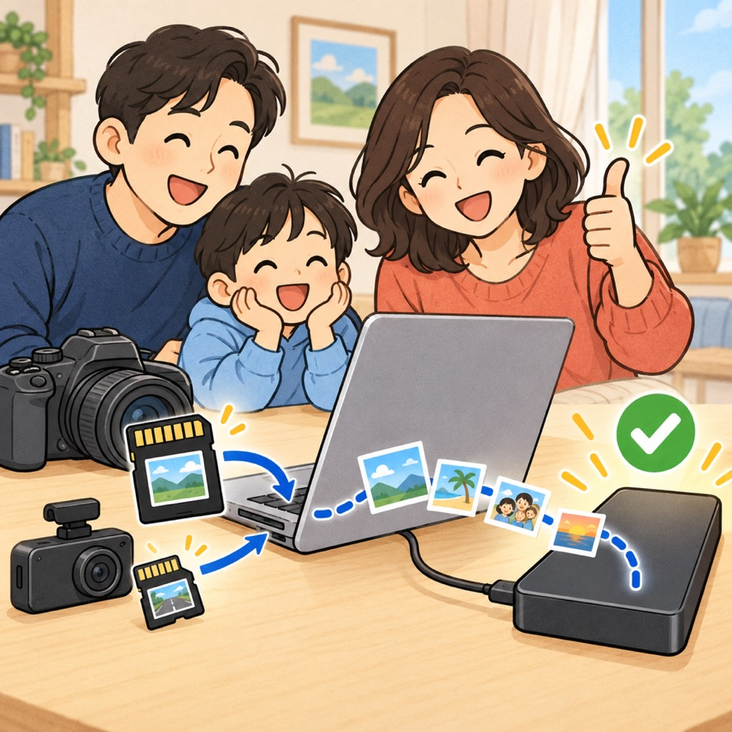
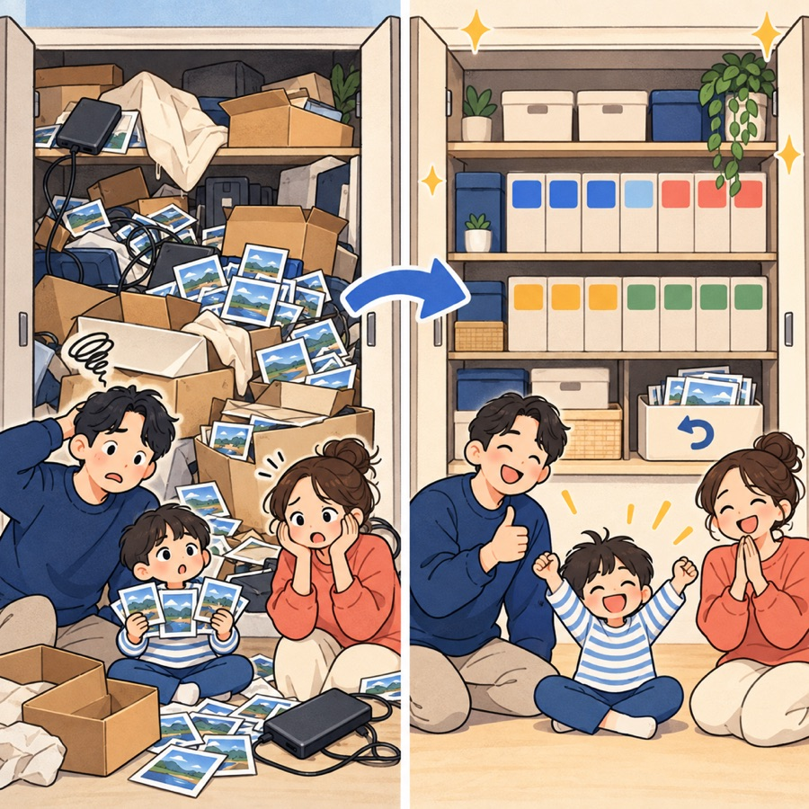
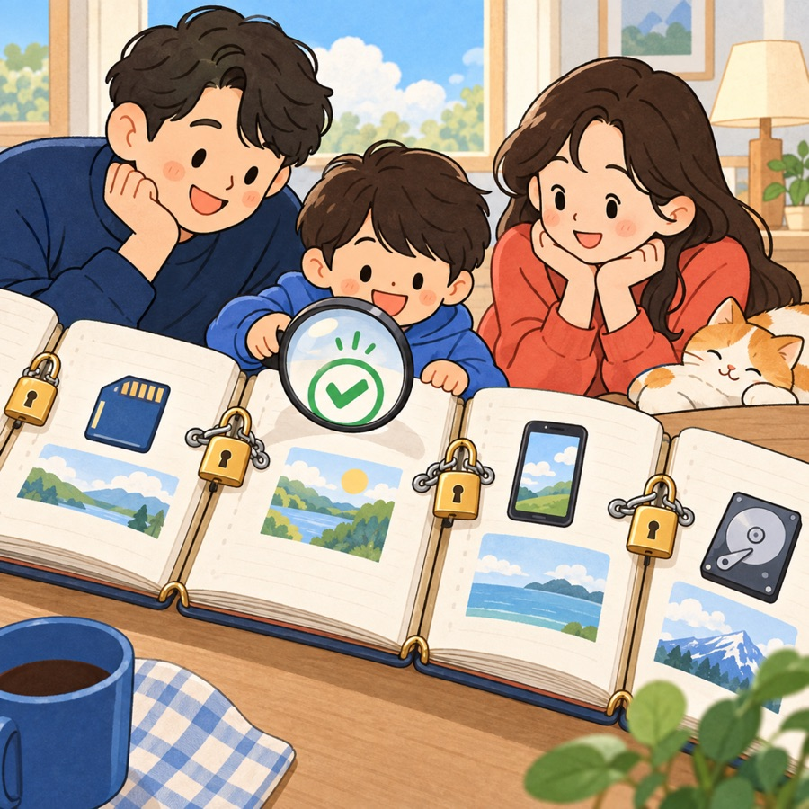

Cadangan Kartu SD
Colok kartunya. Nanti dikabari kapan aman dihapus.
Masukkan kartu SD kamera atau dashcam, lalu pilih hard disk eksternal. Folder di kartu disalin apa adanya, lalu dibaca ulang dari hard disk untuk memastikan sama persis dengan aslinya. Kalau semua cocok: “✅ Kartu ini aman untuk dihapus.”
- Satu kartu = satu folder. Lain kali, kartu yang sama hanya menambah file baru
- Folder tersembunyi dan tempat sampah di kartu ikut tersalin. Tidak ada yang tertinggal
- Cadangkan banyak kartu berturut-turut dengan “Keluarkan dan cadangkan kartu berikutnya”
Cadangan Ponsel
Unduhan dan file chat keluar dari ponsel, ruangnya kembali
Colokkan ponsel Android dan pilih folder (Download, Kamera, WhatsApp, Telegram, juga KakaoTalk) untuk dipindah ke hard disk eksternal. Kedua sisi dibandingkan, dan kalau mau, hanya file yang sudah terverifikasi yang dihapus dari ponsel. Foto baru otomatis masuk ke Album Akhir Pekan, sementara file aslinya tetap di hard disk, jadi hampir tidak memakan ruang Mac.
- File yang berubah setelah disalin tidak akan pernah dihapus
- Cukup nyalakan “Debugging USB” di ponsel, sekali saja
- Pakai iPhone? Impor lewat kabel dengan Tangkap Gambar (Image Capture) atau Foto; file asli yang hanya ada di iCloud diekspor dari aplikasi Foto · Cara impor, per ponsel & komputer →

Rapikan Hard Disk
Hard disk eksternal berantakan? Kamu dapat laporannya dulu.
Hard disk dipindai dan kamu diperlihatkan duplikat, file sampah, folder kosong, dan besar ruang tiap folder, sebelum ada yang dipindah. Pilih yang mau disimpan, sisanya masuk folder penampungan; foto dan video yang tercecer dirapikan ke folder tahun/bulan.
- Hanya file yang identik sampai ke tiap byte yang dianggap duplikat
- Setiap perapian bisa dibatalkan dengan satu tombol
- Folder cadangan kartu SD dan disk Time Machine tidak disentuh
Cadangkan & Kosongkan Ruang
Mac penuh? Albumnya tetap, beratnya hilang.
Cadangkan album ke hard disk eksternal, lalu tekan Kosongkan ruang Mac. Hanya file asli yang sudah terverifikasi yang dihapus dari Mac, dan pratinjaunya tetap ada. File asli dan video langsung terbuka setiap kali hard disk tersambung. Kamu juga bisa memilih folder foto dan video besar di folder rumah dan memindahkannya ke hard disk.
- Salinan di hard disk dibaca ulang sekali lagi tepat sebelum menghapus
- “Kembalikan ke Mac” kapan pun kamu mau
- Perpustakaan Foto, proyek kode, dan folder album tidak pernah dipindah
- Bisa dibatalkan selama Tong Sampah belum dikosongkan
- Cadangkan ke Google Drive dan rapikan sekaligus

Log Aktivitas
Apa pindah ke mana? Masih bisa dijawab berbulan-bulan kemudian.
Setiap pemindahan dan penghapusan dicatat sampai ke tiap file. Nanti, ketuk periksa hasil lagi untuk melihat semuanya masih ada di hard disk, dan memastikan lognya sendiri tidak diubah atau ada catatan yang hilang.
- Lokasi asal, lokasi baru, ukuran, dan MD5 untuk setiap file
- Catatan saling terkait dengan hash, jadi perubahan atau celah akan ketahuan
- Log hanya disimpan di Mac-mu